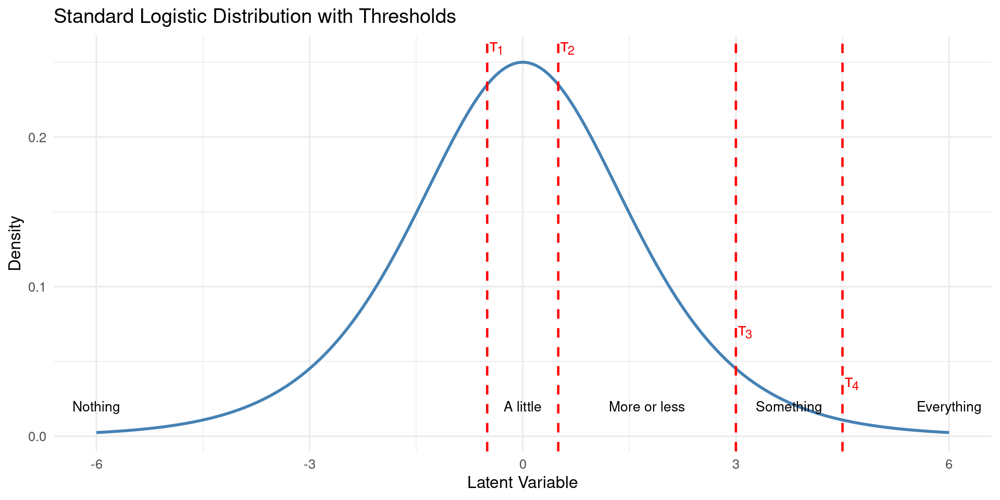
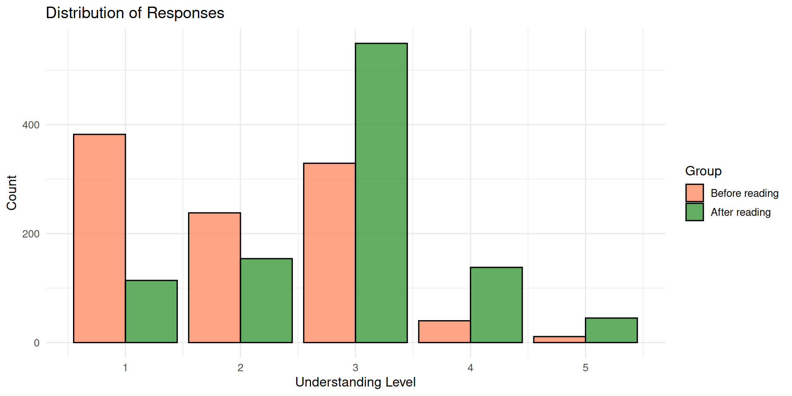
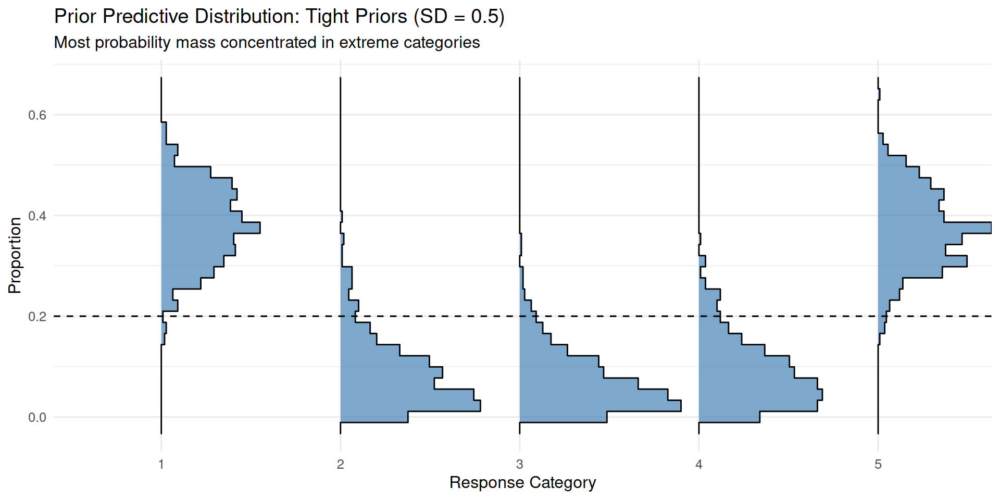
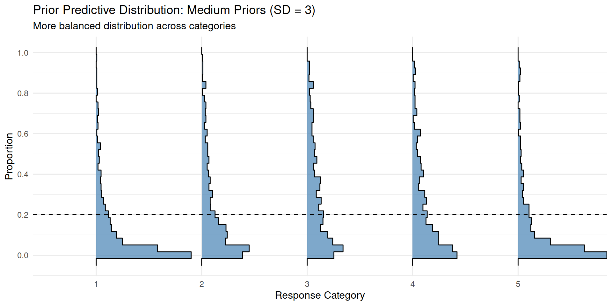
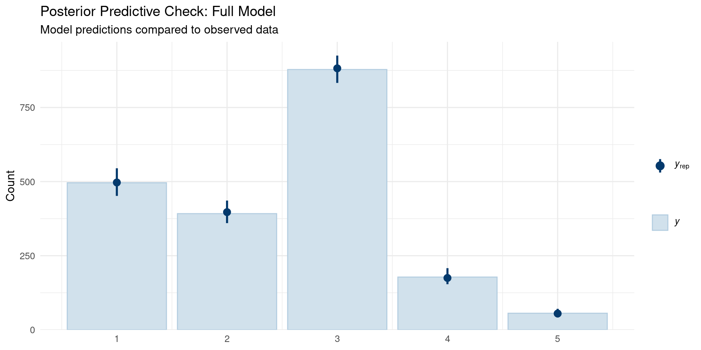
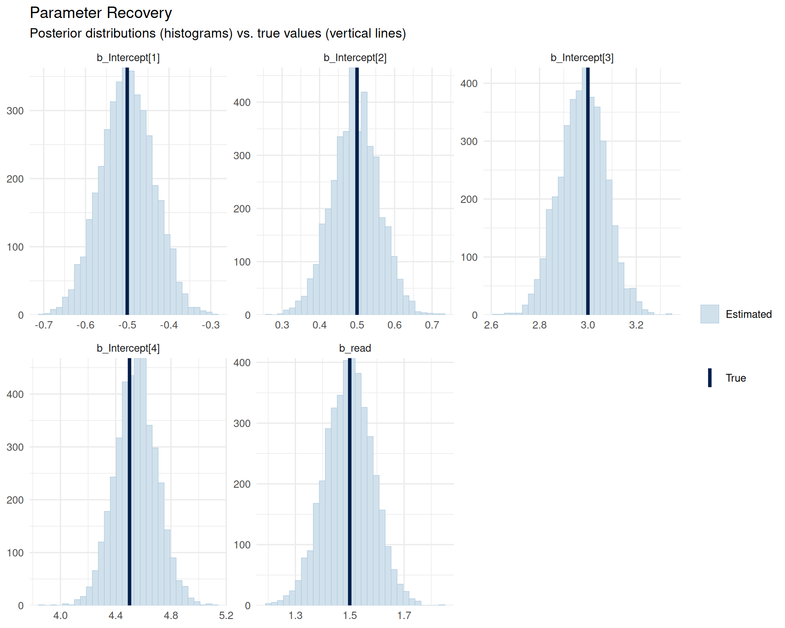

library(extraDistr)
library(tidytable)
library(ggplot2)
library(brms)
library(bayesplot)
library(patchwork)
library(ggridges)
theme_set(theme_minimal(base_size = 14))Bayesian ordinal models: A very short practical guide
Stan
Bayesian
Tutorial
R
brms
Understanding and setting priors in Bayesian ordinal models with cumulative links
I’ll first load some R packages that will be useful throughout this post.
Introduction
This post explains some nuances of Bayesian ordinal regression with cumulative links and focuses on how to set sensible priors.1 These models are appropriate for modeling data where the dependent variables are ordered responses without meaningful metric distances, such as Likert scales. The presentation builds on Bürkner and Vuorre (2019), but restricts attention to cumulative models.
The cumulative link framework
A cumulative link model assumes an underlying continuous latent variable (typically with a normal or logistic distribution) and a set of thresholds \(\tau_1, \ldots, \tau_K\) that partition this scale. An observation falls in category \(k\) if the latent value, a random variable \(\tilde Y\), lies between \(\tau_{k-1}\) and \(\tau_k\), with \(\tau_0 = -\infty\) and \(\tau_{K+1} = +\infty\).
A concrete example
Consider a 5-point Likert scale assessing understanding of Bayesian statistics with options: “nothing,” “a little,” “more or less,” “something,” and “everything.” This scale requires 4 thresholds. The probability for each category corresponds to the area between:
- Category 1 (“nothing”): \(-\infty\) to \(\tau_1\)
- Category 2 (“a little”): \(\tau_1\) to \(\tau_2\)
- Category 3 (“more or less”): \(\tau_2\) to \(\tau_3\)
- Category 4 (“something”): \(\tau_3\) to \(\tau_4\)
- Category 5 (“everything”): \(\tau_4\) to \(+\infty\)
Let’s visualize this with specific threshold values for a logistic distribution2. We make up the following thresholds
thres <- c(-2, -1, 1.5, 3)Code
category <- factor(1:5, labels = c("Nothing", "A little", "More or less",
"Something", "Everything"))
x_vals <- seq(-6, 6, length.out = 500)
norm_data <- data.frame(
x = x_vals,
y = dlogis(x_vals)
)
category_positions <- c(-Inf, thres, Inf)
category_midpoints <- (category_positions[-1] + category_positions[-length(category_positions)]) / 2
category_midpoints[1] <- max(-6, category_midpoints[1])
category_midpoints[5] <- min(6, category_midpoints[5])
threshold_labels <- data.frame(
x = thres,
y = dlogis(thres) + 0.02,
label = paste0("τ[", 1:4, "]")
)
category_labels <- data.frame(
x = category_midpoints,
y = 0.02,
label = as.character(category)
)
p1 <- ggplot(norm_data, aes(x = x, y = y)) +
geom_line(linewidth = 1, color = "steelblue") +
geom_vline(xintercept = thres, linetype = "dashed", color = "red", linewidth = 0.8) +
geom_text(data = threshold_labels, aes(x = x, y = y, label = label),
parse = TRUE, size = 4.5, color = "red", hjust = -0.2, vjust = 0) +
geom_text(data = category_labels, aes(x = x, y = y, label = label),
size = 3.5, color = "black", hjust = 0.5) +
labs(title = "Standard Logistic Distribution with Thresholds",
x = "Latent Variable",
y = "Density") +
theme_minimal(base_size = 12)
print(p1)
Computing category probabilities
Now let’s calculate the probability mass between each threshold:
probs <- diff(plogis(c(-Inf, thres, Inf)))
# This above is just a more general case than:
# probs <- c(
# plogis(thres[1]), # P(Y = 1)
# plogis(thres[2]) - plogis(thres[1]), # P(Y = 2)
# plogis(thres[3]) - plogis(thres[2]), # P(Y = 3)
# plogis(thres[4]) - plogis(thres[3]), # P(Y = 4)
# 1 - plogis(thres[4]) # P(Y = 5)
# )
prob_data <- data.frame(
category = category,
probability = probs
)
prob_data category probability
1 Nothing 0.11920292
2 A little 0.14973850
3 More or less 0.54863305
4 Something 0.13499965
5 Everything 0.04742587Code
ggplot(prob_data, aes(x = category, y = probability, fill = category)) +
geom_col(alpha = 0.7, color = "black") +
scale_fill_brewer(palette = "Blues") +
labs(title = "Category Probabilities (Baseline)",
x = "Understanding Level",
y = "Probability") +
theme_minimal(base_size = 12) +
theme(legend.position = "none",
axis.text.x = element_text(angle = 45, hjust = 1)) +
ylim(0, 1)
We observe that the middle category (“more or less”) receive the highest probability mass.
The effect of shifting thresholds
Now, let’s examine what happens when we shift all thresholds to the right by one unit and a half: simulating less understanding across the board.
thres <- thres + 1.5
category probability
1 Nothing 0.37754067
2 A little 0.24491866
3 More or less 0.33011480
4 Something 0.03643893
5 Everything 0.01098694
Notice how shifting the thresholds rightward decreases the probability of higher categories (more understanding) while increasing the probability of lower categories.
Modeling an intervention effect
In an ordinal regression with a cumulative link, our goal is to understand how a latent variable \(\tilde Y\) shifts based on predictors or interventions. Suppose we want to assess how reading a book about Bayesian modeling3 affects responses to our understanding question.
Simulating data
Let’s generate synthetic data to illustrate this. We’ll simulate a group of students before and after reading our book.
This type of model assumes that, underlyingly, there is a continuous latent “rating”, and we specify a regression on this latent variable \(\tilde Y\) that determines how the response categories are affected by our manipulation (note that there is no intercept here; the thresholds will later act as something close to intercepts for each category):
\[ \tilde Y = \eta + \epsilon \] with
\[\eta = \beta \cdot \text{read}\]
where \(\text{read} \in \{0,1\}\) is a treatment indicator (in more realistic settings, one may prefer richer contrast coding; see Chapter 6 of Nicenboim, Schad, and Vasishth (2025)).
In principle, one could allow the predictor to have category-specific effects by estimating regressions for each threshold. However, Bürkner and Vuorre (2019) argue that while this parameterization is unproblematic for some ordinal models (such as sequential or adjacent-category models), it can lead to difficulties in model fitting for cumulative models.
To move from the continuous latent variable \(\tilde Y\) to a discrete response, we define the observed outcome as follows:
\[Y = k \quad \text{if} \quad \tau_{k-1} < \tilde Y \le \tau_k\] with boundary conditions \(\tau_0 = -\infty\) and \(\tau_{K+1} = +\infty\).
We keep the \(k\) thresholds (\(\tau_k\)) defined above as the default cutoff points (brms refers to these as intercepts, though note the difference in sign convention below).
Given a cumulative link, the probability of observing category \(k\) is
\[\Pr(Y = k \mid \text{read}) = F(\tau_k - \eta) - F(\tau_{k-1} - \eta)\]
Here, \(F\) denotes the cumulative distribution function of the error term \(\epsilon\) of \(\tilde Y\). We assume a logistic distribution for computational convenience, which yields a logistic cumulative link (assuming a normal distribution would lead to a probit link, with otherwise very similar expressions).
Thus, under a logistic cumulative link, the probability of observing category \(k\) is
\[\Pr(Y = k \mid \text{read}) = \operatorname{logit}^{-1}(\tau_k - \eta) - \operatorname{logit}^{-1}(\tau_{k-1} - \eta)\]
where \(\operatorname{logit}^{-1}\) denotes the CDF of the logistic distribution (available in R via plogis()). Notice that the regression term, \(\eta\), is subtracted from each threshold.
To simulate data from this model, we treat the resulting category probabilities as defining a categorical distribution and sample responses accordingly:
\[Y \sim \text{Categorical}\!\left( \Pr(Y=1), \ldots, \Pr(Y=K) \right)\]
One important insight is that \(\beta\) affects all categories equally: when \(\beta > 0\), \(\tilde Y\) increases, increasing the probability of higher response categories at the expense of lower response categories; when \(\beta < 0\), \(\tilde Y\) decreases, increasing the probability of lower categories at the expense of higher response categories.
In the following simulation, we use the last thres values we defined (-0.5, 0.5, 3, 4.5) as the cutoff points of the model (\(\tau_k\); called intercepts in brms), and we assume that reading increases \(\eta\) (and also \(\tilde Y\) on average) by \(1.5\). We generate data from 1000 participants before and after reading our book:
set.seed(123)
N <- 1000
tau <- thres
beta <- 1.5
eta_noread <- 0 * beta
eta_read <- 1 * beta
df_sim <- data.frame(
read = rep(c(0, 1), each = N),
category = c(
rcat(N, diff(plogis(c(-Inf, tau - eta_noread, Inf))), labels = category),
rcat(N, diff(plogis(c(-Inf, tau - eta_read, Inf))), labels = category)
)
) |>
mutate(response = as.numeric(category))
# Display summary statistics
table(df_sim$read, df_sim$category)
Nothing A little More or less Something Everything
0 382 238 329 40 11
1 114 154 549 138 45Let’s visualize the distribution of responses in both groups:
Code
ggplot(df_sim, aes(x = response, fill = factor(read, labels = c("Before reading", "After reading")),
group = factor(read))) +
geom_bar(position = "dodge", alpha = 0.7, color = "black") +
scale_fill_manual(values = c("Before reading" = "coral", "After reading" = "forestgreen")) +
labs(title = "Distribution of Responses",
x = "Understanding Level",
y = "Count",
fill = "Group") +
theme_minimal(base_size = 12)
Now that we have (simulated) data, let’s fit it with brms.
Understanding priors for ordinal models
When fitting ordinal regression models with brms, we need to specify priors for (at least):
- “Intercepts” which in fact are thresholds or cutoff points
- Regression coefficients
In brms, the thresholds are automatically constrained to be ordered (\(\tau_1 < \tau_2 < \ldots < \tau_K\)).
Why tight priors concentrate probability on extremes
Let’s start by examining an intercept-only model with tight priors on the thresholds:
priors_tight <- c(
prior(normal(0, 0.5), class = "Intercept")
)With normal(0, 0.5) “Intercept” priors, all thresholds are pulled toward zero with relatively little spread. This concentrates the thresholds in a narrow region. This means that when thresholds cluster tightly around zero, most of the latent distribution’s mass falls outside the middle thresholds: either far below \(\tau_1\) or far above \(\tau_K\). This assigns most probability to extreme categories (the first and last).
fit_prior_tight <- brm(
response ~ 1,
data = df_sim,
family = cumulative(),
prior = priors_tight,
sample_prior = "only",
cores = 4,
seed = 123,
refresh = 0,
control = list(adapt_delta = 0.9) # avoid divergent transitions
)Code
ppd_ridgeplot <- function(fit, title = "Prior Predictive Distribution",
subtitle = NULL, ndraws = 500) {
yrep <- posterior_predict(fit, ndraws = ndraws)
proportions_per_draw <- lapply(1:nrow(yrep), function(i) {
props <- table(factor(yrep[i, ], levels = 1:5)) / ncol(yrep)
data.frame(
draw = i,
response = factor(1:5),
proportion = as.numeric(props)
)
})
ppd_data <- do.call(rbind, proportions_per_draw)
ggplot(ppd_data, aes(x = proportion, y = response)) +
geom_density_ridges(fill = "steelblue", alpha = 0.7, scale = 0.9, stat = "binline") +
scale_x_continuous(breaks = c(0,.2,.4,.6,.8,1)) +
geom_vline(xintercept = 0.2, linetype = "dashed") +
labs(title = title,
subtitle = subtitle,
x = "Proportion",
y = "Response Category") +
theme_minimal(base_size = 12) +
coord_flip()
}ppd_ridgeplot(fit_prior_tight,
title = "Prior Predictive Distribution: Tight Priors (SD = 0.5)",
subtitle = "Most probability mass concentrated in extreme categories")
With tight priors, the model tends to predict extreme responses, as the thresholds cluster near zero and don’t span the full range of the latent distribution.
Intercept-only model: Medium priors
Now let’s use more dispersed priors:
priors_medium <- c(
prior(normal(0, 3), class = "Intercept")
)With normal(0, 3) “Intercept” priors, the thresholds can spread out more widely across the latent scale. This means the middle thresholds are more likely to be well-separated, capturing more of the distribution’s central mass and leading to more balanced predictions across all categories.
fit_prior_medium <- brm(
response ~ 1,
data = df_sim,
family = cumulative(),
prior = priors_medium,
sample_prior = "only",
cores = 4,
seed = 123,
refresh = 0
)ppd_ridgeplot(fit_prior_medium,
title = "Prior Predictive Distribution: Medium Priors (SD = 3)",
subtitle = "More balanced distribution across categories")
Intercept-only model: Diffuse priors
Let’s examine very diffuse priors:
priors_diffuse <- c(
prior(normal(0, 10), class = "Intercept")
)
fit_prior_diffuse <- brm(
response ~ 1,
data = df_sim,
family = cumulative(),
prior = priors_diffuse,
sample_prior = "only",
cores = 4,
seed = 123,
refresh = 0,
control = list(adapt_delta = 0.9)
)ppd_ridgeplot(fit_prior_diffuse,
title = "Prior Predictive Distribution: Diffuse Priors (SD = 10)",
subtitle = "Very flat distribution - least informative")
Very diffuse priors allow thresholds to be extremely spread out, often resulting in a very sparse distribution across categories.
Intercept-only model: Nudging priors
We might have substantive information suggesting most people start as beginners. We can encode this by centering the “Intercept” priors at a positive value:
priors_mid_inf <- c(
prior(normal(1, 3), class = "Intercept")
)
fit_mid_inf <- brm(
response ~ 1,
data = df_sim,
family = cumulative(),
prior = priors_mid_inf,
sample_prior = "only",
cores = 4,
seed = 123,
refresh = 0
)ppd_ridgeplot(fit_mid_inf,
title = "Prior Predictive Distribution: Nudged Priors (Mean = 1, SD = 3)",
subtitle = "Prior belief that lower understanding is more common")
By centering the”Intercept” priors at 1 instead of 0, we shift thresholds rightward, making lower categories more probable a priori. On the other hand, if we had substantial information that suggests the opposite (e.g. that most people start advanced), we would center the “Intercept” priors at a negative value, shifting the thresholds leftward, making higher categories more probable a priori.
Prior predictive distribution for the slope
Let’s also examine what our prior beliefs about the treatment effect imply:
priors_full <- c(
prior(normal(0, 3), class = "Intercept"),
prior(normal(0, 1.5), class = "b")
)
fit_slope_prior <- brm(
response ~ read,
data = df_sim,
family = cumulative(),
prior = priors_full,
sample_prior = "only",
cores = 4,
seed = 123,
refresh = 0,
control = list(adapt_delta = 0.9)
)ppd_ridgeplot(fit_slope_prior,
title = "Prior Predictive Distribution: Full Model with Slope Prior",
subtitle = "normal(0, 1.5) prior on treatment effect")
The prior normal(0, 1.5) on the slope is weakly informative: it allows for moderate effects in either direction while gently regularizing against implausibly large effects.
Fitting to the simulated data
Now let’s fit the model to our simulated data:
fit_full <- brm(
response ~ read,
data = df_sim,
family = cumulative(),
prior = priors_full,
cores = 4,
seed = 123,
warmup = 1000,
iter = 2000,
refresh = 0
)fit_full Family: cumulative
Links: mu = logit; disc = identity
Formula: response ~ read
Data: df_sim (Number of observations: 2000)
Draws: 4 chains, each with iter = 2000; warmup = 1000; thin = 1;
total post-warmup draws = 4000
Regression Coefficients:
Estimate Est.Error l-95% CI u-95% CI Rhat Bulk_ESS Tail_ESS
Intercept[1] -0.50 0.06 -0.62 -0.38 1.00 4277 3332
Intercept[2] 0.50 0.06 0.38 0.62 1.00 5342 3295
Intercept[3] 2.98 0.09 2.80 3.16 1.00 4316 3872
Intercept[4] 4.55 0.15 4.26 4.86 1.00 4467 3216
read 1.50 0.09 1.33 1.67 1.00 4260 2987
Further Distributional Parameters:
Estimate Est.Error l-95% CI u-95% CI Rhat Bulk_ESS Tail_ESS
disc 1.00 0.00 1.00 1.00 NA NA NA
Draws were sampled using sampling(NUTS). For each parameter, Bulk_ESS
and Tail_ESS are effective sample size measures, and Rhat is the potential
scale reduction factor on split chains (at convergence, Rhat = 1).If this were real data, based on the read coefficient, we would conclude that reading our book affects understanding. The positive coefficient read ≈ 1.5 indicates that reading makes higher categories (more understanding) more probable.
Interpreting predicted probabilities
To understand what the model estimates mean in practical terms, let’s examine the predicted probabilities:
Code
ce <- conditional_effects(fit_full, effects = "read", categorical = TRUE)
plot(ce, plot = FALSE)[[1]] +
scale_fill_brewer(palette = "RdYlGn", direction = 1) +
labs(title = "Predicted Response Probabilities by Reading Status",
subtitle = "Model predictions with 95% credible intervals",
x = "Read Book",
y = "Predicted Probability",
fill = "response") +
theme_minimal(base_size = 12) +
theme(legend.position = "right")
The conditional effects plot shows how reading the book shifts the entire distribution toward higher understanding categories. Before reading (read = 0), lower categories have higher probabilities; after reading (read = 1), the distribution shifts substantially toward “something” and “everything.”
We can also examine specific fitted values:
Code
new_data <- data.frame(read = c(0, 1))
fitted_probs <- fitted(fit_full, newdata = new_data)
fitted_df <- data.frame(
read = rep(c("Before", "After"), each = 5),
category = rep(1:5, times = 2),
probability = c(fitted_probs[1, "Estimate", ], fitted_probs[2, "Estimate",]),
lower = c(fitted_probs[1, "Q2.5",], fitted_probs[2 , "Q2.5",]),
upper = c(fitted_probs[1, "Q97.5",], fitted_probs[2 , "Q97.5",])
)
ggplot(fitted_df, aes(x = factor(category), y = probability, fill = read)) +
geom_col(position = "dodge", alpha = 0.7, color = "black") +
geom_errorbar(aes(ymin = lower, ymax = upper),
position = position_dodge(0.9), width = 0.2) +
scale_fill_manual(values = c("Before" = "coral", "After" = "forestgreen")) +
labs(title = "Model-Predicted Probabilities with 95% Credible Intervals",
x = "Understanding Category",
y = "Predicted Probability",
fill = "Reading Status") +
theme_minimal(base_size = 12)
The fitted probabilities show concrete estimates: for instance, before reading, the probability of responding “nothing” is about 0.38, whereas after reading it drops to about 0.12. Conversely, the probability of responding “everything” increases from about 0.01 to 0.05.
Posterior predictive check
Finally, let’s verify that the model fits the observed data well:
pp_check(fit_full, type = "bars", ndraws = 100) +
labs(title = "Posterior Predictive Check: Full Model",
subtitle = "Model predictions compared to observed data") +
theme_minimal(base_size = 12)
The posterior predictive distribution closely matches the observed data patterns, indicating good model fit.
Recovery of the parameters
Let’s examine whether the model successfully recovered the true parameters we used to generate the data. We simulated with thresholds \(\tau = [-0.5, 0.5, 3, 4.5]\) and a treatment effect of \(\beta = 1.5\).
true_params <- c(thres, beta)
names(true_params) <- c(paste0("b_Intercept[", 1:4, "]"), "b_read")
posterior_draws <- as.array(fit_full,
variable = names(true_params))
mcmc_recover_hist(posterior_draws, true = true_params) +
labs(title = "Parameter Recovery",
subtitle = "Posterior distributions (histograms) vs. true values (vertical lines)") +
theme_minimal(base_size = 12)
The histograms show the posterior distributions for each parameter, with vertical lines indicating the true values used in simulation. We can see that:
- Thresholds: All four threshold parameters are well-recovered, with posterior distributions centered near the true values
- Treatment effect: The
readcoefficient is also well-recovered, with the posterior centered around 1.5
Conclusion
This short tutorial has demonstrated how cumulative link models provide a principled framework for ordinal regression.
By respecting the ordinal nature of the data, rather than treating categories as metric, cumulative link models yield more appropriate inferences for ordered categorical outcomes. The example above is intentionally simple; in cognitive science, data are typically clustered (e.g., by participants or items), which naturally calls for hierarchical models. For an application to ordinal ratings in this setting, see Taylor et al. (2022). For a more general introduction to hierarchical modeling with brms, see chapter 5 of Nicenboim, Schad, and Vasishth (2025).
How to cite this post
Citation
BibTeX:
@misc{nicenboim2026bayesianordinalmodelsaveryshortpracticalguide,
author = {Nicenboim, Bruno},
title = {Bayesian ordinal models: A very short practical guide},
year = {2026},
month = {januari},
url = {https://bruno.nicenboim.me/posts/posts/2026-01-09-bayesian-ordinal-models-a-very-short-practical-guide/},
doi = {10.5281/zenodo.18225472}
}APA:
Nicenboim, B. (2026, januari 09). Bayesian ordinal models: A very short practical guide. https://doi.org/10.5281/zenodo.18225472
Session info
R version 4.5.0 (2025-04-11)
Platform: x86_64-pc-linux-gnu
Running under: Ubuntu 22.04.5 LTS
Matrix products: default
BLAS: /usr/lib/x86_64-linux-gnu/atlas/libblas.so.3.10.3
LAPACK: /usr/lib/x86_64-linux-gnu/atlas/liblapack.so.3.10.3; LAPACK version 3.10.0
locale:
[1] LC_CTYPE=en_US.UTF-8 LC_NUMERIC=C
[3] LC_TIME=nl_NL.UTF-8 LC_COLLATE=en_US.UTF-8
[5] LC_MONETARY=nl_NL.UTF-8 LC_MESSAGES=en_US.UTF-8
[7] LC_PAPER=nl_NL.UTF-8 LC_NAME=C
[9] LC_ADDRESS=C LC_TELEPHONE=C
[11] LC_MEASUREMENT=nl_NL.UTF-8 LC_IDENTIFICATION=C
time zone: Europe/Amsterdam
tzcode source: system (glibc)
attached base packages:
[1] stats graphics grDevices utils datasets methods base
other attached packages:
[1] ggridges_0.5.6 patchwork_1.3.2 bayesplot_1.12.0 brms_2.22.0
[5] Rcpp_1.1.0 ggplot2_3.5.2 tidytable_0.11.2 extraDistr_1.10.0
loaded via a namespace (and not attached):
[1] gtable_0.3.6 tensorA_0.36.2.1 xfun_0.52
[4] QuickJSR_1.7.0 htmlwidgets_1.6.4 processx_3.8.6
[7] inline_0.3.21 lattice_0.22-5 callr_3.7.6
[10] vctrs_0.6.5 tools_4.5.0 ps_1.9.1
[13] generics_0.1.4 stats4_4.5.0 curl_7.0.0
[16] parallel_4.5.0 tibble_3.3.0 pkgconfig_2.0.3
[19] Matrix_1.7-3 data.table_1.18.0 checkmate_2.3.2
[22] RColorBrewer_1.1-3 distributional_0.5.0 RcppParallel_5.1.10
[25] lifecycle_1.0.4 compiler_4.5.0 farver_2.1.2
[28] stringr_1.5.1 Brobdingnag_1.2-9 codetools_0.2-19
[31] htmltools_0.5.8.1 yaml_2.3.10 pillar_1.11.1
[34] tidyr_1.3.1 StanHeaders_2.36.0.9000 bridgesampling_1.1-5
[37] abind_1.4-8 nlme_3.1-168 posterior_1.6.1
[40] rstan_2.36.0.9000 tidyselect_1.2.1 digest_0.6.37
[43] mvtnorm_1.3-3 stringi_1.8.7 dplyr_1.1.4
[46] reshape2_1.4.4 purrr_1.1.0 labeling_0.4.3
[49] fastmap_1.2.0 grid_4.5.0 cli_3.6.5
[52] magrittr_2.0.4 loo_2.8.0 pkgbuild_1.4.7
[55] withr_3.0.2 scales_1.4.0 backports_1.5.0
[58] rmarkdown_2.29 matrixStats_1.5.0 gridExtra_2.3
[61] coda_0.19-4.1 evaluate_1.0.3 knitr_1.50
[64] V8_6.0.4 rstantools_2.4.0 rlang_1.1.6
[67] glue_1.8.0 jsonlite_2.0.0 R6_2.6.1
[70] plyr_1.8.9 References
Bürkner, Paul-Christian, and Matti Vuorre. 2019. “Ordinal Regression Models in Psychology: A Tutorial.” Advances in Methods and Practices in Psychological Science 2 (1): 77–101. https://doi.org/10.1177/2515245918823199.
Nicenboim, Bruno, Daniel J. Schad, and Shravan Vasishth. 2025. Introduction to Bayesian Data Analysis for Cognitive Science. 1st ed. Chapman; Hall/CRC. https://doi.org/10.1201/9780429342646.
Taylor, Jack E., Guillaume A. Rousselet, Christoph Scheepers, and Sara C. Sereno. 2022. “Rating Norms Should Be Calculated from Cumulative Link Mixed Effects Models.” Behavior Research Methods 55 (5): 2175–96. https://doi.org/10.3758/s13428-022-01814-7.
Footnotes
Thanks to Lenneke Lichtenberg for a helpful discussion about this kind of model.↩︎
The logistic distribution is not that different from the normal distribution: it is a symmetrical bell-shaped distribution. The reason for using this distribution rather than the normal distribution is that the modeling will need to rely on the cumulative density function (CDF), and the logistic tends to be more numerically stable↩︎
Shameless self-promotion of Nicenboim, Schad, and Vasishth (2025).↩︎
Reuse
MIT